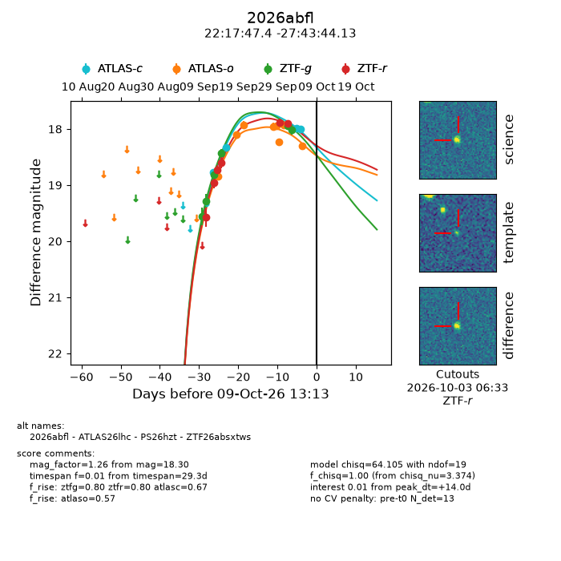
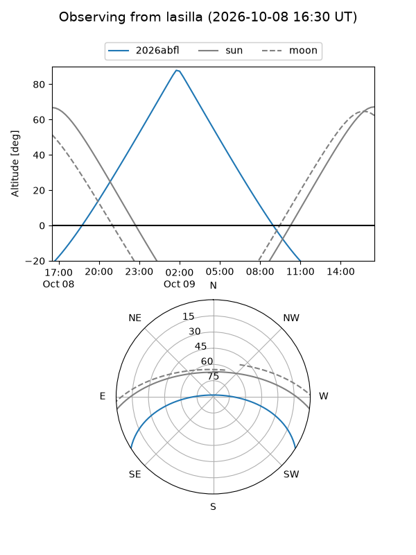
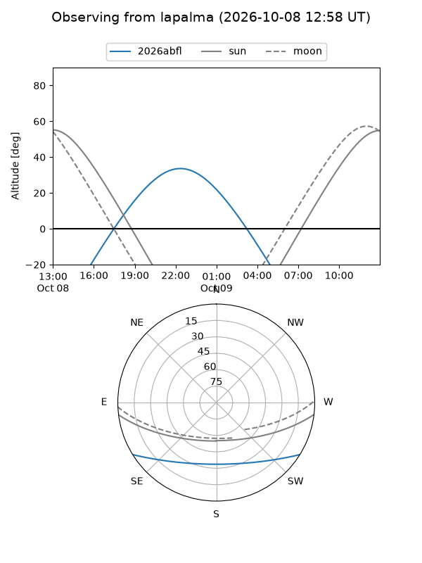
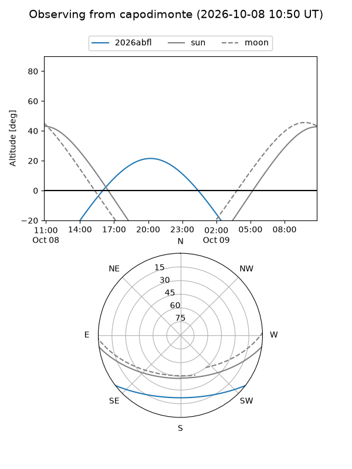
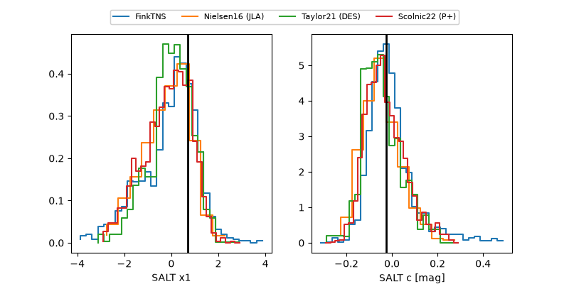

2026abfl
Target 2026abfl at 2026-10-09 13:15
Aliases and brokers:
FINK-ZTF: ztf.fink-portal.org/ZTF26absxtws
Lasair-ZTF: lasair-ztf.lsst.ac.uk/objects/ZTF26absxtws
ALeRCE-ZTF: alerce.online/object/ZTF26absxtws
YSE-PZ: ziggy.ucolick.org/yse/transient_detail/2026abfl
TNS name: wis-tns.org/object/2026abfl
Direct TNS query: direct search
alt names
ZTF26absxtws (ztf,fink_ztf)
2026abfl (tns,yse)
ATLAS26lhc (atlas)
PS26hzt (panstarrs)
Coordinates:
equatorial (ra, dec) = 334.4474,-27.72892
equatorial (HMS+DMS) = 22:17:47.38,-27:43:44.13
galactic (l, b) = (22.8442,-56.04125)
Flags:
peak dt: +14.0
Photometry:
last atlasc=18.00, atlaso=18.30, ztfg=18.01, ztfr=17.91
4 atlasc, 8 atlaso, 6 ztfg, 6 ztfr detections
Lightcurve

Visibility



Additional plots
